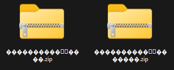
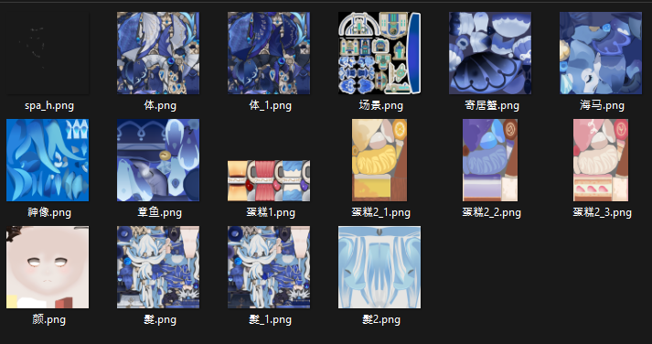

PMX to VRM Pipeline
Drop a ZIP, get a UE-ready VRM
Production · Python · TypeScript · glTF 2.0
Problem
We needed to bring PMX characters from Booth/community into the project, but there was no way to convert PMX to UE-compatible VRM. Manual conversion broke bone mappings, lost physics on hair/skirts, and corrupted textures, completely changing the look. The MMD Player was built as a source verifier for this pipeline.
Solution
An automated PMX to glTF to VRM conversion pipeline. Drop in a ZIP, get a UE-ready VRM out. The key requirement was preserving physics (hair, skirt, ribbon) and material look without breaking them.
Pipeline Flow
ZIP → PMX Parse → glTF Build → VRM Output| Tool | User | Method |
|---|---|---|
| Python CLI | TA / Batch jobs | Batch-convert multiple models at once |
| Next.js Web App | Anyone on the team | Upload ZIP in browser, download VRM |
| Browser SPA | External / No server | Client-only conversion |

Web app — ZIP in, VRM out
Result
| Category | Result |
|---|---|
| Conversion Rate | 90% success on major game PMX (HoYoverse, Eternal Return, Cyphers, etc.) |
| Model Coverage | Both Japanese and Chinese PMX supported |
| Conversion Speed | 393ms (Saber.pmx, 28K vertices) |

Left: Original game screenshot — Right: Viewer rendering after PMX to VRM conversion
Why This Was Hard
Every texture comes out white
Problem: Converting models with CJK filenames produced all-white 1×1 fallback textures. Console flooded with Failed to load texture.
Cause: Texture paths had two sources. ZIP entry names are encoded in the OS codepage (Shift-JIS, GBK, etc.), while PMX binary stores paths precisely in UTF-16LE. Extracting the ZIP creates mojibake filenames on disk, but PMX looks for the correct name — file not found.
Fix: When a texture file is missing, try 6 encoding round-trips (GBK↔EUC-KR, GBK↔Shift-JIS, etc.) to reverse-map the filename to the mojibake version on disk. TS does proactive decoding at extraction time; Python does reverse matching at load time — different runtimes, different solutions.

ZIP extraction produces garbled filenames like this

PMX binary stores the correct CJK texture filenames
Chinese models' spring bones are all frozen
Problem: Japanese PMX (Miku, Archer) had natural hair movement, but Chinese PMX (HoYoverse, etc.) had completely frozen spring bones.
Cause: Japanese and Chinese modelers follow different physics conventions. Japanese models use spring_constant for restoring force with 0.5–0.8 damping. Chinese models set spring_constant=0, control motion via rotation limits, and use 0.99+ damping. The converter didn't pass rotation limits and had no dragForce cap, so Chinese models got dragForce≈1.0 — effectively frozen.
Fix: Restored rotation limits as a parameter source, capped dragForce at 0.8, and skipped spring bone generation for chains with all-zero rotation limits (accessories), fixing them to parent bones. Spring bones went from 571 to 120.
Legs don't move on certain models
Problem: Certain models had completely immobile legs. Models like Miku worked fine, so the bug went unnoticed for a while.
Cause: PMX has a "D-bone" (double bone) structure. 左足 (left leg) and 左足D coexist, but vertex weights are assigned only to the D-bone. The converter always picked the regular bone (左足) — mapping to an empty bone with zero weights. Models without D-bones showed no symptoms, making the root cause hard to trace.
Fix: Pass skinnedBoneIndices (list of bones with actual vertex weights) to the bone mapping function so D-bones are prioritized when they exist. The priority logic was already implemented — it just wasn't being called with the right parameter.